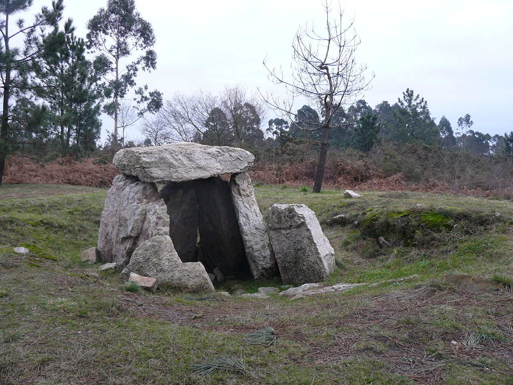

El origen del nombre de Gijón suscita desde hace tiempo un intenso debate entre los estudiosos. En fecha tan temprana como 1899, Miguel de Unamuno emitió ya su opinión, según la cual la palabra provendría del latín saxum «peñasco», lo cual tendría relación con las características geográficas del emplazamiento de la ciudad, cuyo núcleo primitivo se asentó en el gran promontorio que hoy se denomina Cerro de Santa Catalina y en el que se ubica el casco histórico de Cimadevilla. Otras interpretaciones de la época buscan el origen del término en voces celtas como:
gy:«agua» + om: «rodeada» (según Bullet);
hitón: «gran hito» u «obra maestra» (según Uría) o
egi + gon:«sitio estrecho y recogido, alto y bueno» (según Becerro de Bengoa).
Basándose en el primitivo carácter de Gijón como asentamiento militar, Sánchez propone la palabra sessio, que aparece en expresiones como sessio legionis o in sessione legionum, teoría que reforzaría la presencia de unas «aras sestianas» o «aras sessianas» que algunos autores sitúan en la Campa Torres y Sánchez interpreta como «aras de la sessio» o «aras sessianas», es decir, «aras gijonesas». Otras explicaciones han buscado el origen del término en antropónimos como gegionus, gegion, segius (según Manzanares); sassonius (según Schulze) o hipotéticos *iaionus, *ieionus (según García Arias). Por otra parte, según sostiene el filólogo Xosé Lluis García Arias, la enormemente popular identificación de Gijón con la Gigia, citada por Ptolomeo, en realidad no tendría nada que ver con la urbe asturiana sino que correspondería a una población situada en lo que hoy es territorio leonés, quizá próxima al río Cea. También cabe suponer que puesto que la ciudad fue fundada por la Legio VII Gemina deba de ahí su nombre
Oficialidad
El Estatuto de Autonomía del Principado de Asturias prevé la protección, uso y promoción de la lengua asturiana en la comunidad autónoma. La Ley 1/1998, de 23 de marzo, de uso y promoción del bable/asturiano desarrolló la anterior norma y dispuso que los topónimos de la región tendrían la denominación oficial en su forma tradicional. Posteriormente, y siguiendo los pasos descritos por el Decreto 98/2002, de 18 de julio, por el que se establece el procedimiento de recuperación y fijación de la toponimia asturiana, el Gobierno de la comunidad autónoma oficializó los nombres vernáculos de todos los núcleos de población del concejo de Gijón. Así, por ejemplo, el topónimo de la capital municipal pasó a ser bilingüe: «Gijón/Xixón». No obstante, el Decreto 98/2002 indica que para la alteración de la denominación de los concejos deberá tramitarse un expediente conforme a lo dispuesto en la Ley 7/1985, de 2 de abril, reguladora de las Bases del Régimen Local. Según esta última norma, los cambios de denominación de los municipios españoles solo tendrán carácter oficial cuando se publiquen en el Boletín Oficial del Estado. Dado que esto aún no ha sucedido para Gijón, a día de hoy el nombre castellano es el único oficial para el concejo.
Símbolos
El escudo de Gijón, de cuyo uso se tiene constancia desde 1649, representa a Don Pelayo, primer rey de Asturias, sosteniendo una espada en su mano derecha y la Cruz de la Victoria prolongada con un báculo en la mano izquierda. La leyenda vincula a Don Pelayo con Munuza, quien fuera gobernador musulmán de Gijón y con quien entró en lucha ofendido por el matrimonio no consentido entre el gobernador y la hermana de este. Preside el conjunto la corona real española.
Fig.1 - Escudo Gijón
La bandera de Gijón es rectangular, de un largo igual a tres medios su ancho, blanca, tiene un ribete rojo en sus cuatro lados de un ancho equivalente a un sexto de su largo y lleva el escudo municipal en el centro en versión polícroma. Tiene su origen en la matrícula asignada a la provincia marítima de Gijón por el Gobierno de España ―Real Decreto de 30 de julio de 1845―.
Fig.2 - Bandera Gijón
Geografía
Gijón está situado en el centro de la costa cantábrica del Principado de Asturias, España, en el suroeste de Europa, al norte de la península ibérica, sobre una rasa litoral en las estribaciones de la cordillera Cantábrica. Forma parte de la vertiente hidrográfica cantábrica y se sitúa en su punto más alto (Pico Cima) a 737 m s. n. m.. El punto más alto de la zona urbana (Ceares) se sitúa a 59 m s. n. m.. El término municipal de Gijón tiene una superficie de 182,1 km² y una forma vagamente rectangular. La ciudad, que ocupa una superficie aproximada de 13,9 km², está situada en el tramo costero central del concejo, en una bahía dividida por el Cerro de Santa Catalina (Cimadevilla) que separa la playa de San Lorenzo al este, del Puerto Deportivo, playas de Poniente y Arbeyal, astilleros y puerto de El Musel, al oeste.
El término municipal de Gijón limita con los siguientes concejos: Carreño al noroeste, Corvera al oeste, Llanera al suroeste, Siero al sur y Villaviciosa al este. Con Sariego sus límites llegan a unirse en un pequeño punto correspondiente a la Peña de los Cuatro Jueces, así llamada por constituir la confluencia de los concejos de Gijón, Villaviciosa, Sariego y Siero.
Hidrografia
Gijón forma parte de la vertiente hidrográfica cantábrica. Los ríos más destacables del concejo son el río Aboño y el río Piles. El río Aboño es el de mayor tamaño y caudal. Nace en el Alto de la Miranda (Llanera) y desemboca en el límite entre el concejo de Gijón y el de Carreño formando así la ría de Aboño, fuertemente industrializada en las últimas décadas. Este río se encuentra embalsado a la altura de San Andrés de los Tacones, al oeste del concejo al lado de la autopista A-66, y sirve de abastecimiento de la empresa ArcelorMittal. El principal afluente del Aboño es el río Pinzales, de similar importancia hidrológica. El Pinzales nace en el concejo de Siero y atraviesa el concejo de Gijón de sur a norte. El río Piles, de gran importancia por atravesar parte del casco urbano de la ciudad, es un río corto y de caudal escaso cuyos 10 o 15 kilómetros transcurren íntegramente dentro de los límites del municipio, atravesando la parte este de la ciudad hasta desembocar en la playa de San Lorenzo. Existen otros arroyos menores (Peña Francia, Santurio, San Miguel, Tremañes, Cutis, Pilón, etc), de los cuales el más importante es el de La Ñora, que forma un tramo de la frontera con el concejo de Villaviciosa y desemboca en la playa del mismo nombre.
Clima
El clima de Gijón, determinado por la presencia del mar y la baja altitud del concejo, es un clima oceánico, con abundantes precipitaciones desde el otoño hasta los primeros días de la primavera, y un tiempo más estable y cálido en verano. Según los datos ofrecidos por la Agencia Estatal de Meteorología para la estación meteorológica de Gijón (período 1971-2000), la media del mes más frío (enero) fue de 8,9 °C, la media del mes más cálido (agosto) fue de 19,7 °C y la temperatura media anual es de 13,8 °C (media anual de máximas: 17,6 °C; media anual de mínimas: 9 °C). La nieve cubre ocasionalmente en el invierno los montes del concejo que rodean la ciudad y llega de forma esporádica al centro de la ciudad, con una media de un día de nieve anual.
La precipitación media anual es de 920 l/m². Ello se debe al denominado efecto de ladera, según el cual las lluvias más intensas se localizan en las zonas más altas y las mínimas en zonas costeras del centro y el occidente. Coincidiendo con la época de menos lluvias se dan situaciones de aridez y sequía (el 11 % de los meses hay aridez y el 9 % el déficit hídrico es grave).
Los vientos son esporádicos y estacionales. En invierno soplan preferentemente del sureste, templados y cálidos, a causa de la retirada hacia el sur del anticiclón de las Azores, con lo que las borrascas atlánticas siguen una trayectoria más meridional. En verano la situación se invierte, predominando vientos del nordeste, fríos y secos.
Parámetros climáticos promedio de Gijón
Mes
Ene.
Feb.
Mar.
Abr.
May.
Jun.
Jul.
Ago.
Sep.
Oct.
Nov.
Dic.
Anual
Temp. máx. abs. (ºC)
23.6
23
27
28
31.8
36.4
31.4
30
34.6
30.4
26.1
25
36.4
Temp. máx. media (ºC)
13.1
13.8
14.9
15.6
17.8
20.2
22.4
23.2
21.8
19.0
15.6
14.0
17.6
Temp. media (ºC)
8.9
9.6
10.7
11.8
14.3
16.9
19.2
19.7
17.9
15.0
11.6
9.9
13.8
Temp. mín. media (ºC)
4.7
5.4
6.6
8.1
10.9
13.6
16.0
16.2
14.1
11.0
7.6
5.8
10.0
Temp. mín. abs. (ºC)
-9.6
-6.0
-3.0
-1.4
2.2
5.8
5.6
5.2
4.7
2.6
-3.4
-6.8
-9.6
Precipitación total (mm)
94
85
74
93
79
47
45
54
70
104
120
104
971
Días de precipitaciones (≤ 1 mm)
12
11
10
12
11
7
6
7
8
11
12
12
121
Horas de sol
103
109
137
151
167
180
194
190
158
132
106
92
1721
Fuente: Agencia Estatal de Meteorología
Historia
Prehistoria
Los más antiguos testimonios de presencia humana en lo que hoy conocemos como concejo de Gijón datan del Mesolítico y consisten en instrumentos de piedra llamados «picos asturienses», hallados en la desembocadura del río Piles y en Tremañes. Estas herramientas permitían arrancar de las rocas moluscos como las lapas, los cuales formaban parte de la dieta de los primeros habitantes de la zona.
Más adelante, en el Neolítico, se construyeron en el Monte Deva una serie de túmulos (primitivos enterramientos) y en el Monte Areo un conjunto dolménico considerado como uno de los más importantes de la costa Cantábrica. En 1990, unas prospecciones arqueológicas permitieron sacar a la luz 30 dólmenes, repartidos en dos sectores diferentes: Los Llanos y Les Huelgues de San Pablo, que según algunos expertos están agrupados en un «cierto orden monumental». Sucesivas campañas arqueológicas han permitido el estudio de un túmulo en el área de San Pablo y otros dos en la zona de Los Llanos. De tipología diferenciada, dos de ellos presentan cámaras de planta rectangular y otro, trapezoidal con un pequeño corredor precediéndolo. Este último es un caso interesante, ya que no es frecuente encontrar dólmenes de corredor en el área del Cantábrico. Este conjunto dolménico está datado en el 5000 a. C. Estos monumentos megalíticos indicarían que en el actual concejo gijonés existía una importante población fija, que tenía como objetivo la demarcación del territorio que cada uno consideraba propio.

Fig.3 - Dolmen en la necrópolis del Monte Areo.
Edad Antigua
No se tienen noticias de asentamientos permanentes en el concejo hasta la aparición de los castros. El más conocido de estos poblados fortificados es el situado en la Campa Torres (Noega), con su origen en los siglos vi y v a. C., poblado por astures de la gens de los cilúrnigos y posteriormente romanizado al tratarse de un perfecto candidato para acoger temporalmente efectivos militares tras la conquista. En cambio, algunos autores opinan que debió existir algún tipo de población de carácter autóctono en el lugar que ocupa actualmente la ciudad, aunque no existen datos fidedignos que apoyen estas suposiciones.
El castro de Noega fue progresivamente abandonado como consecuencia de la fundación en el siglo i d. C. de un nuevo asentamiento romano a los pies del Cerro de Santa Catalina, en el actual barrio de Cimadevilla. Este se convirtió en un importante puerto estratégico en la ruta marítima del Cantábrico y un centro regional o caput ciutatis que alcanzó su esplendor en el Bajo Imperio. Las investigaciones arqueológicas realizadas en el casco urbano a partir de la década de 1980 han descubierto y documentado los restos de termas (siglo i a ii d. C.), murallas (siglo iii a iv), viviendas, aljibes y una fábrica de salazones, entre otros hallazgos. Entre los vestigios de ocupación romana encontrados en el concejo destaca una gran villa del siglo iv en Veranes que conserva la parte residencial o pars urbana y la de servicios o pars rustica.
Sin embargo, la existencia de una ciudad ha sido cuestionada por algunos historiadores, quienes interpretan que el poblamiento romano del cerro se corresponde con una villa con unos baños asociados y que potenció su actividad económica con una pesquería. La fortificación se correspondería con su transformación en un puesto defensivo militar.
Fig.4 - Recreación de una vivienda astur prerromana en la Campa Torres.
Edad Media y Moderna
Tras la romanización hubo una época muy oscura, la cual transcurrió desde el fin del control romano hasta la llegada de los musulmanes. De hecho, el paso a la época medieval estuvo marcado por la pérdida progresiva de las funciones urbanas provocado por el colapso de la civilización romana. Las construcciones romanas son reaprovechadas para nuevas funciones. Así, se ha documentado el uso del complejo termal como lugar de habitación y de espacio funerario asociado a la iglesia de San Pedro, y en la zona rural del concejo la villa de Veranes fue reconvertida en iglesia y cementerio y la de Beloño en fortificación.
Gijón fue capital de los dominios transcantábricos musulmanes bajo mando del bereber Munuza, quien fijó aquí su residencia y puso destacamentos de tropas. También situó asentamientos militares en algún otro punto clave, pues un alto número de tropas habían cruzado el estrecho. El resto de la región, en cambio, gozó de mayor autonomía. La dominación duró aproximadamente desde el año 713 hasta el 718 o 722. En este último año se produjo la victoria de los dirigentes asturianos en la batalla de Covadonga, iniciada en el 718 y liderada por Pelayo, quien se convertirá en rey del reino de Asturias.
Gijón fue capital de los dominios transcantábricos musulmanes bajo mando del bereber Munuza, quien fijó aquí su residencia y puso destacamentos de tropas. También situó asentamientos militares en algún otro punto clave, pues un alto número de tropas habían cruzado el estrecho. El resto de la región, en cambio, gozó de mayor autonomía. La dominación duró aproximadamente desde el año 713 hasta el 718 o 722. En este último año se produjo la victoria de los dirigentes asturianos en la batalla de Covadonga, iniciada en el 718 y liderada por Pelayo, quien se convertirá en rey del reino de Asturias.
En el año 1147 un gran grupo de guerreros cruzados hicieron una parada en el puerto de Gijón. Habían salido de Dartmouth con el objetivo de conquistar Tierra Santa y fueron sorprendidos por un temporal en el mar Cantábrico. En un documento en el que cuentan estos hechos llaman a la ciudad Mala Rupis, que en latín significa «peña mala», tal vez por su aspecto poco accesible.
A principios del siglo xiii la crónica de Rodrigo Jiménez de Rada habla de Gijón como ciuitas deserta. Y a pesar de que en 1270 Alfonso X le concedió fuero y Carta Puebla, se trataba de un núcleo irrelevante tanto demográfica como económicamente.
El siglo xiv, época en la que el poder de la nobleza alcanza su máximo, estuvo marcado por una lucha dinástica tras la muerte de Alfonso XI. Se trata de una guerra entre Pedro I el Cruel, descendiente legítimo, y el bastardo Enrique de Trastámara. En los años siguientes Gijón fue centro de luchas entre el conde Alfonso Enríquez y Enrique III, en las que fue cercada, incendiada y arrasada durante un duro sitio en 1394, para terminar desapareciendo como centro urbano. Otras fuentes, sin embargo, opinan que se produjo un estancamiento y regresión en el crecimiento del núcleo urbano sin llegar nunca al abandono. Como consecuencia, durante este periodo la zona rural del concejo adquirió bastante importancia, localizándose la población diseminada por el campo al amparo de iglesias y monasterios construidos en estilo románico, y levantándose asimismo algunas fortalezas. Un ejemplo notable de estas últimas construcciones es el desaparecido castillo de Curiel, que servía para controlar el paso desde el centro de la región a la villa gijonesa. Aún hoy se conservan vestigios de esta época, destacando la torre de la familia Valdés —conocida popularmente como el Turruxón de Trubia— y las iglesias de San Miguel de Dueñas en Bernueces y de San Juan Bautista en Cenero.
No fue hasta los siglos xv y xvi cuando Gijón empezó a desarrollarse de nuevo. Esto es debido a las mejoras realizadas en su puerto, donde se construyó una dársena que incrementó el tráfico de pesca y el comercio de subsistencia.
En los siglos xvii y xviii Gijón experimentó un gran desarrollo que hizo que su núcleo urbano se expandiese. Esto fue debido al Reglamento de libre comercio de 1778, que habilitó el puerto para el comercio con las colonias americanas. Se convirtió de esta forma en el único en Asturias habilitado para tal fin, siendo además la vieja dársena mejorada y ampliada tras su destrucción por una tormenta. Gracias a ello, a la mejora de las comunicaciones con la Meseta y a la creación del Instituto Asturiano, durante el siglo xviii Gijón alcanzó una población muy próxima a los 5500 habitantes. En esta época la figura de Gaspar Melchor de Jovellanos jugó un papel clave, pues aparte de promover la creación del instituto y otras obras, fue quien marcó las líneas de expansión de la ciudad en su «Plan de Mejoras», pionero de los planes de ensanche.